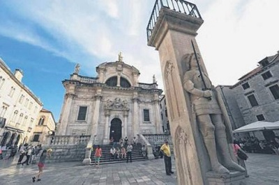
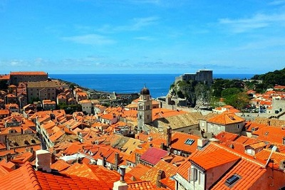
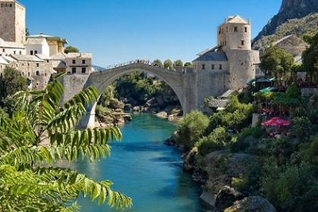
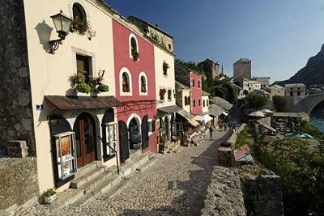
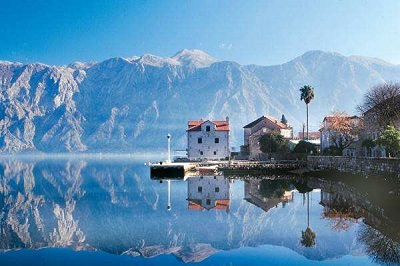
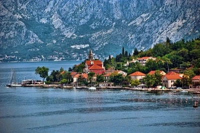
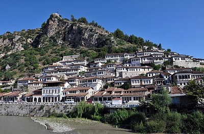
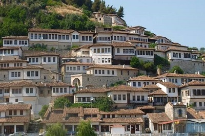

morly旅游网
巴尔干半岛充满各种优美的古城，或靠山，或临海，各有特色。其中有几个古城特別值得推荐，因为他们並非纯旅游景点，而是真正住有居民的完整古城，城内设备整全，古建筑保存良好。如果你想去欧洲旅游，感受欧洲的历史，那么这些古色古香的古城最适合不过！
以下4座古城，都是欧洲小众国家的著名景点，它们冷门、低调、少有人知。更难得的是，这些城市的消费非常低，堪称欧洲最具性价比的目的地，特别适合想来一趟欧洲小众旅游的朋友们。
日出日落之时，找个最佳观景位置，看着大自然的神奇造化，忘掉生活或旅途上的不快。傍晚走在昏黄的小巷，路灯映照之下，十分有欧洲的古典氛围，你可以不慌不忙地散步，暂时忘掉所有的行程。
要好好体验这些古城，蜻蜓点水的游览并不合适，最好的方法就是住进城内，可以一天24小时感受不同时间的风景与人情。清晨走在宁静的小巷，避开还未到达的旅行团，享受那股清幽恬静，脚步不自觉地就轻快了起来。
杜布罗夫尼克
位于克罗地亚(Croatia) 最南端的杜布罗夫尼克（Dubrovnik），可以满足你的童话梦。它一个典型的欧洲古城，虽没有睡公主的尖顶城堡，但建筑更加丰富，有保存完整的城墙及城门，古代皇城的云石地板。古城背山面海而建，享有无敌大海景，走上城墙环顾，四周都风景怡人。
 莫斯塔尔
莫斯塔尔的大量建筑于二次世界大战中被炸毁，就连地标的古桥也逃不过恶运，战后由多国捐助重建，才让古城重新焕发了生机。虽然没有城墙包围，但城里的古建筑群沿河紧密相连，城内的古市集(Old Bazzar)仍保留着18世纪风貌，走在城中好像时光倒留。
 科托尔
最高处就是堡垒及监视四周的军事要塞，虽然城墙已经失修，但部份路段仍然可以攀登，在此观看整个山城及日落是最佳位置。很多人也会自带酒水饮食，在黄昏时候沿城墙登山，坐在山顶看着万家灯火，比起在广场的露天酒吧举杯又是更地道的一种体验。
 培拉特
它的特色在于沿山密密麻麻的房子，错落地互相连接，呈现出不规则的美感，也让古城得到了"City of the Floating Windows"的别名。第一眼看到照片时，很多人会联想到西藏的沿山建筑，但这里并没有那么肃穆的氛围。走在既没有修饰、天然粗糙的巷子里，更能让人感受到自然美好的怀旧气息。
 内容整理至网络，如有侵权，请联系我们！1255394075@qq.com